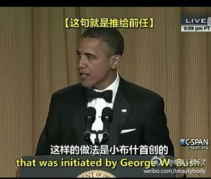

转发微博。@马少平THU:同学聚会时，再一次谈起大学时期的一段趣事。一同学A号称是北京某著名中学的乒乓冠军，另一同学B不言不语，实在忍不住A吹牛，约A大战一场。A找了一球拍，B手拿一皮鞋，鞋底当球拍。大战两局，结果A局局得分不过半。原来B是八一队的。
奥巴马是影帝，和温总一个风格的 //@王小川:希望这样四十五度仰角的聆听，更欢喜这样幽默的表达 //@陈睿:奥巴马的单口相声！强烈推荐@神经病人高智商:奥巴马在2012白宫记者会上的犀利吐槽段子。。全程槽点不断！这才叫活生生的领导演讲阿，堪比郭德纲。。。吐槽归吐槽，奥巴马的最后对记者的几句话，却道出了对媒体的尊重—— “你们让我不好过，我也想给你们点不痛快。但要感谢你们努力捍卫我们的民主、自由、和生活方式。” 网页链接 